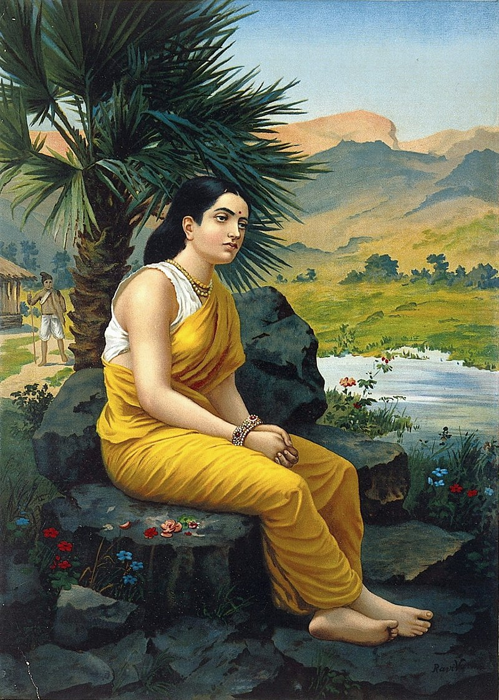
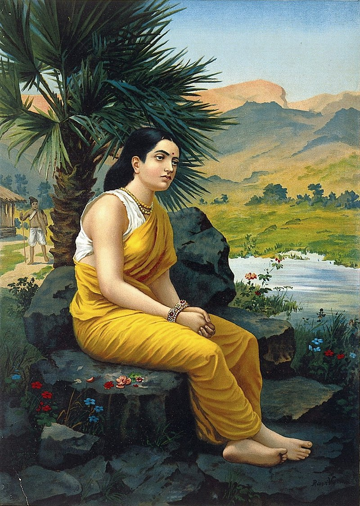

The Ramayana is an ancient Sanskrit epic which follows Prince Rama's quest to rescue his beloved wife Sita from the clutches of Ravana with the help of an army of monkeys. It is traditionally attributed to the authorship of the sage Valmiki and dated to around 500 BCE to 100 BCE. Comprising 24,000 verses in seven cantos, the epic contains the teachings of the very ancient Hindu sages. One of the most important literary works of ancient India, it has greatly influenced art and culture in the Indian subcontinent and South East Asia, with versions of the story also appearing in the Buddhist canon from a very early date. The story of Rama has constantly been retold in poetic and dramatic versions by some of India's greatest writers and also in narrative sculptures on temple walls Characters of the Ramayana Rama is the hero of the Ramayana epic, an incarnation of the God Vishnu. The eldest and favourite son of Dasaratha, King of Ayodhya, he is a virtuous prince and is much loved by the people. He is exiled from Ayodhya due to the plotting of his stepmother, Kaikeyi. Sita is Rama's wife and daughter of King Janaka of Mithila. Sita is the epitome of womanly purity and virtue. Lakshmana with bow Laksmana (seen here) is Rama's younger brother. Completely loyal to Rama, he chooses to go with Rama and Sita when they are exiled from Ayodhya.